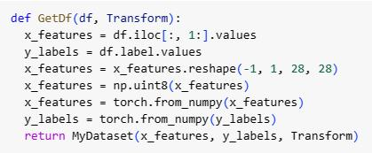

PyTorch:
B. Import library
Import Data
Data preparation
Normalised the data
Apply augmentation

break the data frame into features and labels, make a reshape, and convert it to tensors
Training
Initially I train the classifier for 10 epochs. Then I unfreeze the network. Train all the components together for another 10 epochs. Subsequently the model generates predictions based on the test data.
Included:(ClassifierTraining,Network-wide,
Training and Predictions)
After that we will need to upload the model and launch training.

In this training, I used CPU in order to speed up the training process.
Make the prediction